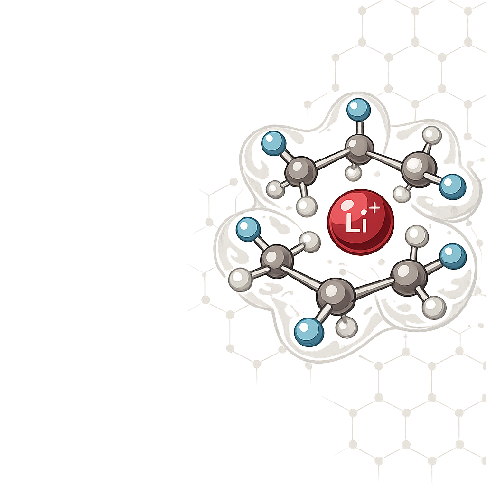

基于 CALiSol-23 及同行评审期刊的 4,800 条实验数据训练，预测锂离子电池电解液的离子电导率、稳定性窗口与 SEI 成膜倾向。每个预测附带 SHAP 可解释性归因与数据来源追溯。

从配方设计到虚拟筛选再到模型验证，完整的 AI 驱动电解液研发流程
选择溶剂、锂盐和添加剂，即刻获得 5 维 AI 预测与 SHAP 特征归因。
浏览 3,000+ 预筛选配方，分面筛选定位最优候选电解液组合。
5 折交叉验证 R²=0.91，SHAP 瀑布图追溯每个预测的特征贡献。